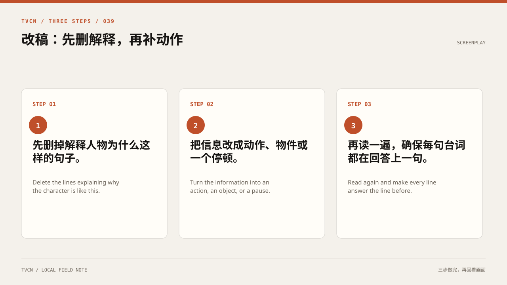

现场
改稿时先搜因为、所以、感到，每找到一个就删掉，换成一个动作或物件；一页最多留一个解释句。
怎么做
- 先搜“因为、所以、感到”，每找到一个就删掉。
- 把删掉的信息换成一个动作或物件。
- 一页最多留一个解释句，其余都让画面说。
别踩
别用解释补漏洞；解释越多，动作越少。
DIAGRAM / Screenplay
三步流程

三种原因
针对“改稿：先删解释，再补动作”，先按三个方向排查；每次只改一个变量，改完录 30 秒对比，看变化跟着哪个环节走。
| 原因 | 现场信号 | 5 分钟验证 |
|---|---|---|
| 解释主题 | 人物说出“我学会了放下”，戏就没有了 | 把主题改成动作和代价 |
| 重复信息 | 同一件事说三遍，观众提前走 | 每场只保留一个新信息 |
| 缺动作 | 整页都在说，没有人物做事 | 每页至少一个动作改变关系 |
现场诊断
- 逐页标“说”与“做”；如果一页全是说，删或改。
- 用一句话写每场的变化；写不出就是没变化。
- 把最后一句删掉，看前一句是否还能成立。
修法
改稿不是删字数，是让每一页都发生一个变化。先删解释，再把信息藏进动作。
- 删掉角色解释自己为什么这样的台词。
- 把背景信息放进道具、空间或动作：一张旧照片、一扇锁着的门。
- 每场结尾让关系或信息发生变化，不要停在原样。
- 把最想说的主题留到最后一个动作，不要让人物说。
失败案例
处理“改稿：先删解释，再补动作”时，下面三种做法会更糟；先选一个替换动作，别同时改三个变量。
| 失败做法 | 为什么会更糟 | 替换动作 |
|---|---|---|
| 只删字数 | 页面短了，变化还是没有 | 按场检查变化 |
| 加更多事件 | 事件堆叠，人物没有选择 | 每个事件必须逼一个选择 |
| 把解释改成旁白 | 信息还在，只是换了嘴 | 改成可见动作 |
验收表
验收不是“感觉好了”，是这四项都能指认、能回放、能记录。
| 验收项 | 通过线 | 记录 |
|---|---|---|
| 每场变化 | 每场能写出一句“从 X 到 Y” | 逐场表 |
| 说/做比例 | 每页至少一个动作 | 页面标记 |
| 解释 | 角色不解释自己的心理 | 搜索“因为/其实” |
| 结尾 | 最后动作承担主题 | 读最后三页 |
图片说明：本页封面、图解与步骤图是编辑示意或结构图，不是本页实测照片，也不能当作器材测试证据；AI 辅助生成的图会在图注标出。判断器材或画面，以正文的测试条件与现场记录为准。